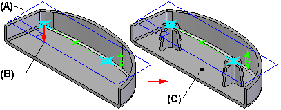
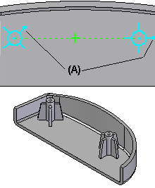

Mounting Boss command
Constructs a mounting boss. You can use the Mounting Boss command to construct a simple cylindrical boss, or you can specify center hole, stiffening rib, draft angle, and rounding parameters.
When defining the profile plane for a mounting boss feature, you define the profile plane (A) above or below the surface to which you want the boss to extend. You then define the extent direction (B) such that the feature extends toward the surface (C) you want.

All mounting bosses constructed as part of the same feature must have the same parameter settings, such as boss diameter, number of stiffening ribs, and draft angle. You define the parameters for a mounting boss feature using the Mounting Boss Options dialog box. For mounting bosses with different parameters, construct another feature.
Rotating mounting boss profiles
When constructing a mounting boss feature with stiffening ribs, you can use the Mounting Boss Properties dialog box to rotate a mounting boss profile to a different orientation. When a mounting boss feature consists of multiple profiles, you can define a unique rotation angle for each profile in the feature. One of the legs on the mounting boss profile has a dot (A) to indicate the rotation angle of the profile.

You do not manually draw a profile for a mounting boss. You specify the properties you want using the Mounting Boss Options dialog box, then position the profile using the Mounting Boss Location command.